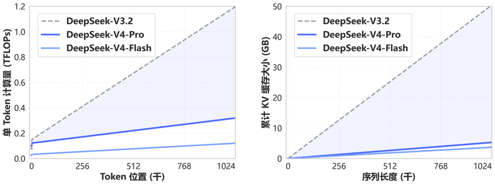

DeepSeek-V4-Flash-DSpark

先把身份说清楚
| 问题 | 答案 |
|---|---|
| 是新 checkpoint 吗 | 否，官方明确说与 V4-Flash 是 same checkpoint |
| 新增了什么 | 一个附着的 speculative decoding module |
| 会提升 benchmark 能力吗 | 官方没有这样声称；目标是加速 decode |
| 参数 / context | 沿用 Flash：284B total / 13B activated / 1M |
| 应放哪里 | V4 的推测解码支线，不进入主干模型时间线 |
| 后继关系 | 正式 DeepSeek-V4-Flash-0731 已把 DSpark 随主 checkpoint 发布 |
DSpark 在推理链路中的位置
自回归生成通常每次只确认一个 token。推测解码让一个 draft/speculative module 先提出多个候选 token，再由 target model 验证；被接受的候选可以减少 target decode 的串行步数。
这里的关键不是另起一个大型 draft model。官方说明 target 与 draft 权重来自同一发行物，因此：
- vLLM 只需把
method设为dspark； - SGLang 不应再传
--speculative-draft-model-path； - 评估时要看 accepted tokens、吞吐和尾延迟，而不是假定“加模块一定等比例加速”。
vLLM 的最小关键配置
bashvllm serve deepseek-ai/DeepSeek-V4-Flash-DSpark \ --trust-remote-code \ --speculative-config '{"method":"dspark","num_speculative_tokens":7,"draft_sample_method":"greedy"}'
num_speculative_tokens=7 表示每轮最多提出 7 个候选，greedy 是官方示例里的 draft sampling。最佳值会随硬件、batch、输出分布和 reasoning 长度变化，不能把示例超参当成普适最优。
SGLang 对应：
bashsglang serve \ --model-path deepseek-ai/DeepSeek-V4-Flash-DSpark \ --speculative-algorithm DSPARK
不要再指定独立 draft path；否则就偏离了这个发行物的结构。
为什么它对 Agent 系统重要
Agent 的成本常被工具执行时间掩盖，但在长 reasoning、代码生成和多轮修复里，decode 仍会积累成主要延迟。Flash 本身以 13B active 降低单 token 计算，DSpark 进一步减少串行 decode step，两者优化的是不同轴：
| 层面 | Flash 主体 | DSpark |
|---|---|---|
| 目标 | 降低每个 target token 的激活计算 | 一次 target 验证尽量接受多个候选 |
| 训练身份 | 基模 checkpoint | 附加推测模块 |
| 影响能力 | 决定能力上限 | 原则上保持 target 分布 |
| 主要指标 | accuracy、tokens/s、KV cache | acceptance、speedup、p95 latency |
应怎样验收 DSpark
建议至少分开测：
- 长自由 reasoning：候选可预测性可能较低。
- 代码生成：局部模式更规则，接受率可能更高。
- JSON/tool calls：格式规则强，但一个错误 token 会导致整段候选被拒。
- 高并发 batch：draft 开销与 target 验证的重叠方式会变化。
证据边界
官方 model card 完整解释了“不是新模型”和推测模块身份，也给了家族架构与基准；但没有公开 DSpark 在不同硬件、batch、任务上的 acceptance、吞吐、显存与延迟曲线。因而本页不会写具体加速倍数。
一手资料
待补证据
- [ ] 在统一硬件测 accepted tokens / step、tokens/s 与 p95 latency。
- [ ] 比较 code、reasoning、tool JSON 三种输出分布。
- [ ] 验证与正式 Flash-0731 内置 DSpark 的结构和吞吐差异。